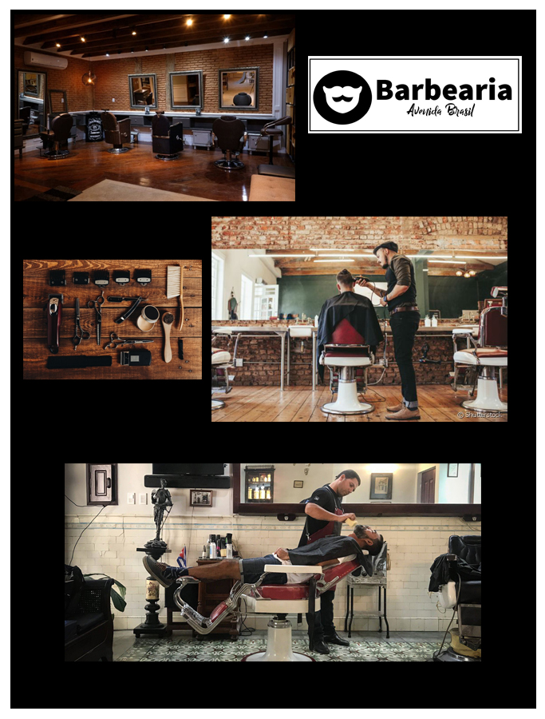

No Edifício Cacique, construído em 1056 e assinado pelo arquiteto Miguel Badra
Júnior, está instalada a barbearia. Logo na entrada duas imponentes colunas mantêm os azulejos da época de sua construção
No centro, um salão redondo de blocos de vidro chama a atenção de quem passa pela rua e vê as grandes navalhas em neons piscando
sinalizando o serviço. Na entrada um jardim com pedras e cactos, transformando o espaço
num ambiente externo com mesas e cadeiras para a espera dos clientes. As formas
curvas do estilo do prédio foram preservadas e a ambientação exigiu uma marcenaria
exclusiva com moveis curvilíneos montados em tornearia com desenhos inspirados nas
tradicionais barber shops. Nesta unidade 5 cadeiras de barbeiro, 3 no térreo e 2 no mezanino.
“Estamos espalhando o clássico grooming e preservando uma construção clássica e
charmosa dos anos 50 na cidade, em um ponto privilegiado próximo ao centro da cidade.
Esse é o resultado da força do nosso conceito, da nossa verdade e do nosso serviço.”
Na Barbearia Avenida Brasil oferecemos mais que barba, cabelo e bigode. Aqui você encontra e faz amigos, assiste futebol,
tem cerveja gelada, games, sinuca e muito mais. Venha fazer parte da “Nostra Famiglia”
e entenda porquê somos O LUGAR PARA GRANDES HOMENS
Há cerca de 5.000 anos, os homens da Idade do Bronze já se preocupavam com o visual que
apresentavam, é o que conta o hairstylist italiano Aldo Coppola. As primeiras navalhas foram produzidas
em pedra afiada no Egito Antigo, o que nos leva a crer onde e quando a história da barbearia começou.